library(sf)
library(terra)
library(tmap)Visualising Sentinel-2 Multispectral Data in R
Sentinel-2 is a multispectral Earth observation mission that captures imagery in 13 spectral bands at 10 m, 20 m, and 60 m spatial resolutions. With a wide swath width of 290 km, the twin Sentinel-2 satellites provide frequent and consistent coverage of the Earth’s surface.
Each spectral band records different information about the land surface, such as vegetation, water, soil, and built-up areas. By combining these bands in different ways, we can create true-color and false-color composites that highlight specific surface features and patterns.
Overview:
In this tutorial, you will learn how to:
- Read Sentinel-2 image bands
- Visualise image bands
- Resample image bands
- Create multiband images
- Create colour composites
- Plot colour composites
- Export images to local directory
Required packages
You will use the following packages: sf, terra and tmap.
Load packages
Read data
bt <- st_read("../assets/data/blantyre_city.shp")Reading layer `blantyre_city' from data source
`C:\Users\devmbeya\Documents\rforgisrstutorials\assets\data\blantyre_city.shp'
using driver `ESRI Shapefile'
Simple feature collection with 1 feature and 14 fields
Geometry type: POLYGON
Dimension: XY
Bounding box: xmin: 710370.6 ymin: 8242082 xmax: 727889.4 ymax: 8263460
Projected CRS: WGS 84 / UTM zone 36Sb1 <- rast("../assets/data/bt_s2_images/s2_b01.tif")
b2 <- rast("../assets/data/bt_s2_images/s2_b02.tif")
b3 <- rast("../assets/data/bt_s2_images/s2_b03.tif")
b4 <- rast("../assets/data/bt_s2_images/s2_b04.tif")
b5 <- rast("../assets/data/bt_s2_images/s2_b05.tif")
b6 <- rast("../assets/data/bt_s2_images/s2_b06.tif")
b7 <- rast("../assets/data/bt_s2_images/s2_b07.tif")
b8 <- rast("../assets/data/bt_s2_images/s2_b08.tif")
b8a <- rast("../assets/data/bt_s2_images/s2_b8A.tif")
b9 <- rast("../assets/data/bt_s2_images/s2_b09.tif")
b11 <- rast("../assets/data/bt_s2_images/s2_b11.tif")
b12 <- rast("../assets/data/bt_s2_images/s2_b12.tif")Definitions
- Band: A single layer of information that records how much energy is reflected from the Earth’s surface within a specific range of wavelengths. For Sentinel-2, each band corresponds to a different part of the electromagnetic spectrum and captures unique surface characteristics.
- One band = one grayscale image
- Each pixel = reflectance measured at a specific wavelength
- Multiple bands together = a multispectral image
- SpatRaster: A raster data object used by the
terrapackage in R to store and work with gridded spatial data. It represents data arranged in rows and columns of cells (pixels), where each cell has a value and a geographic location. A SpatRaster can contain one layer(single band) or multiple layers (multiple bands) in the same object.- One band = a single-layer SpatRaster
- Several stacked bands = a multi-layer SpatRaster
Sentinel-2 band characteristics
The bands read above are Sentinel-2 Level-2A Surface Reflectance bands for Blantyre city, Malawi acquired on October 24, 2025. The Sentinel-2 Level-2A product provides atmospherically corrected surface reflectance (SR) images, derived from the corresponding Level-1C products. The atmospheric correction accounts for:
- Rayleigh scattering by air molecules,
- Absorption and scattering by atmospheric gases, including ozone, oxygen, and water vapor, and
- Absorption and scattering caused by aerosol particles.
| Band | Name | Spatial Resolution | Wavelength (nm) |
|---|---|---|---|
| B01 | Coastal aerosol | 60 m | 443 |
| B02 | Blue | 10 m | 490 |
| B03 | Green | 10 m | 560 |
| B04 | Red | 10 m | 665 |
| B05 | Vegetation Red Edge 1 | 20 m | 705 |
| B06 | Vegetation Red Edge 2 | 20 m | 740 |
| B07 | Vegetation Red Edge 3 | 20 m | 783 |
| B08 | NIR | 10 m | 842 |
| B8A | Vegetation Red Edge | 20 m | 865 |
| B09 | Water Vapour | 60 m | 945 |
| B11 | SWIR 1 | 20 m | 1610 |
| B12 | SWIR 2 | 20 m | 2190 |
Table 1: Sentinel-2 Bands and their Characteristics
Explore properties of the bands
print(b1) # print band propertiesclass : SpatRaster
size : 357, 293, 1 (nrow, ncol, nlyr)
resolution : 60, 60 (x, y)
extent : 710340, 727920, 8242080, 8263500 (xmin, xmax, ymin, ymax)
coord. ref. : WGS 84 / UTM zone 36S (EPSG:32736)
source : s2_b01.tif
name : Grayscale crs(b1) # check the coordinate reference system for the band[1] "PROJCRS[\"WGS 84 / UTM zone 36S\",\n BASEGEOGCRS[\"WGS 84\",\n DATUM[\"World Geodetic System 1984\",\n ELLIPSOID[\"WGS 84\",6378137,298.257223563,\n LENGTHUNIT[\"metre\",1]]],\n PRIMEM[\"Greenwich\",0,\n ANGLEUNIT[\"degree\",0.0174532925199433]],\n ID[\"EPSG\",4326]],\n CONVERSION[\"UTM zone 36S\",\n METHOD[\"Transverse Mercator\",\n ID[\"EPSG\",9807]],\n PARAMETER[\"Latitude of natural origin\",0,\n ANGLEUNIT[\"degree\",0.0174532925199433],\n ID[\"EPSG\",8801]],\n PARAMETER[\"Longitude of natural origin\",33,\n ANGLEUNIT[\"degree\",0.0174532925199433],\n ID[\"EPSG\",8802]],\n PARAMETER[\"Scale factor at natural origin\",0.9996,\n SCALEUNIT[\"unity\",1],\n ID[\"EPSG\",8805]],\n PARAMETER[\"False easting\",500000,\n LENGTHUNIT[\"metre\",1],\n ID[\"EPSG\",8806]],\n PARAMETER[\"False northing\",10000000,\n LENGTHUNIT[\"metre\",1],\n ID[\"EPSG\",8807]]],\n CS[Cartesian,2],\n AXIS[\"(E)\",east,\n ORDER[1],\n LENGTHUNIT[\"metre\",1]],\n AXIS[\"(N)\",north,\n ORDER[2],\n LENGTHUNIT[\"metre\",1]],\n USAGE[\n SCOPE[\"Navigation and medium accuracy spatial referencing.\"],\n AREA[\"Between 30°E and 36°E, southern hemisphere between 80°S and equator, onshore and offshore. Burundi. Eswatini (Swaziland). Kenya. Malawi. Mozambique. Rwanda. South Africa. Tanzania. Uganda. Zambia. Zimbabwe.\"],\n BBOX[-80,30,0,36]],\n ID[\"EPSG\",32736]]"ncell(b1) # check number of cells[1] 104601dim(b1) # check number or rows[1] 357 293 1res(b1) # check spatial resolution of band 1[1] 60 60res(b2) # check spatial resolution of band 2[1] 10 10res(b3) # check spatial resolution of band 3[1] 10 10nlyr(b1) # number of layers / bands[1] 1# Do bands have same properties: resolution, extent, number of rows, columns
# and projection?
#compareGeom(b1, b2)
#compareGeom(b3, b2)Visualise the bands
Use basic plot() function
plot(b1)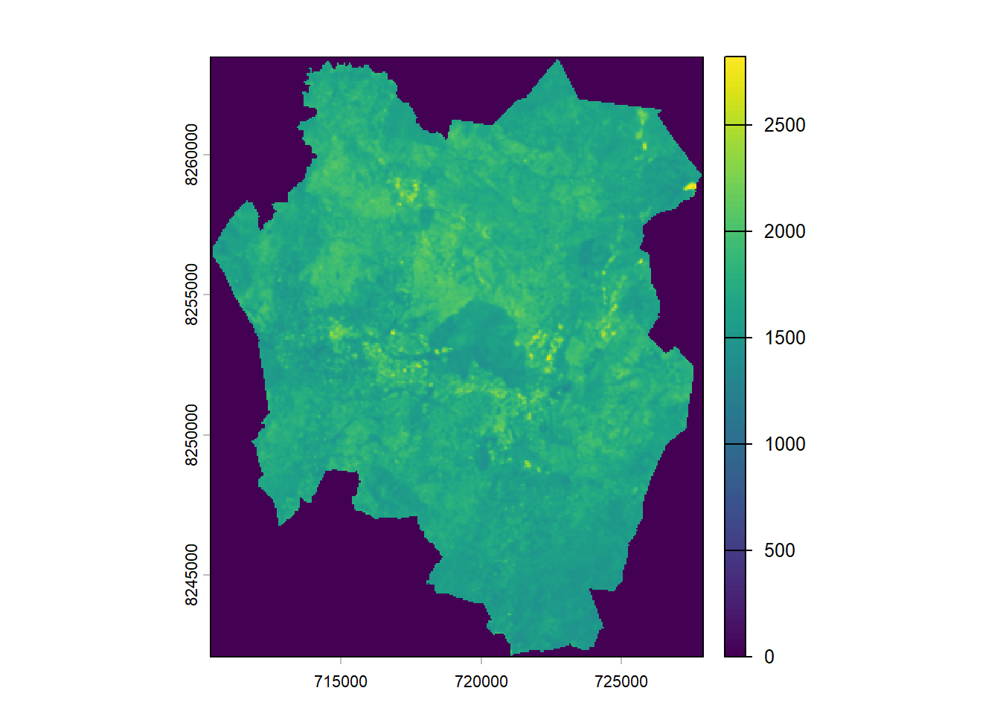
Scale visualisation values
plot(b1, col = gray(0:100/100))plot(b2, col = gray(0:100/100))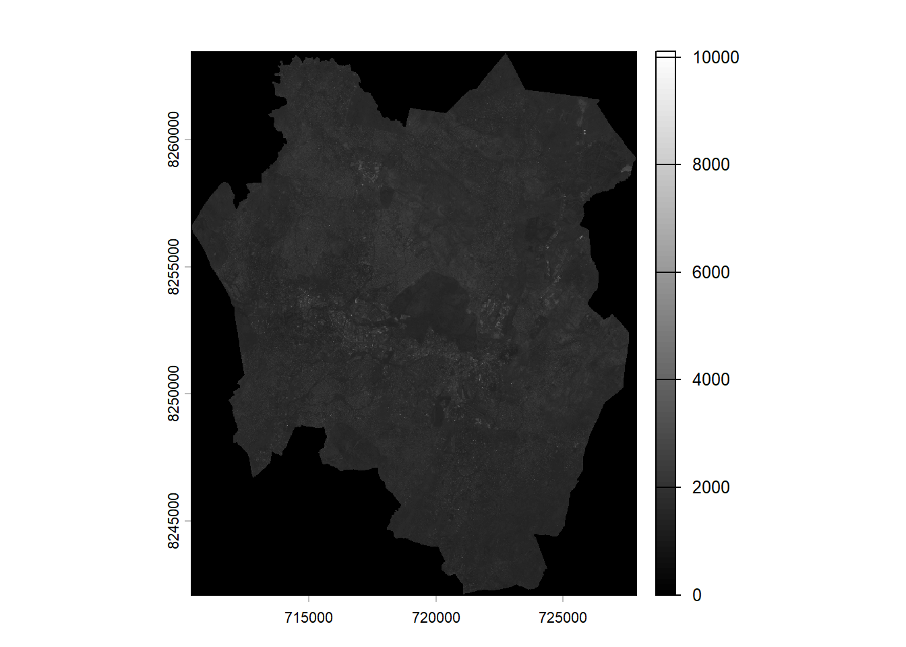
plot(b3, col = gray(0:100/100))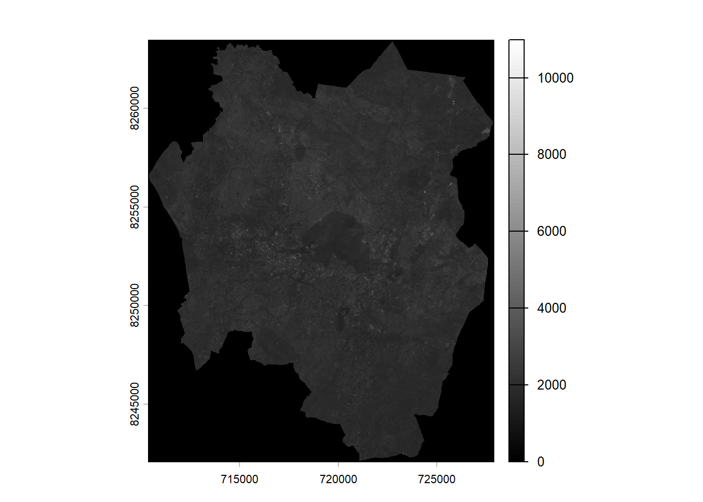
plot(b4, col = gray(0:100/100))The plot() function with scaled gray values above creates a smooth grayscale color ramp from black to white and uses it to render the raster.
What you see on the map:
- Dark pixels → low reflectance / low digital numbers
- Bright pixels → high reflectance / high digital numbers
We can title the plots
plot(b1, col = gray(0:100/100), main = "Band 1 (Grayscale)")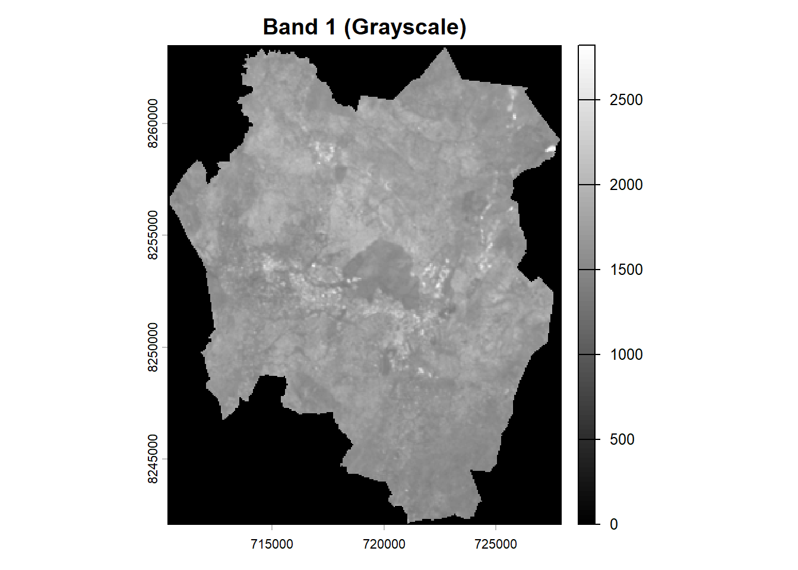
plot(b2, col = gray(0:100/100), main = "Band 2 (Grayscale)")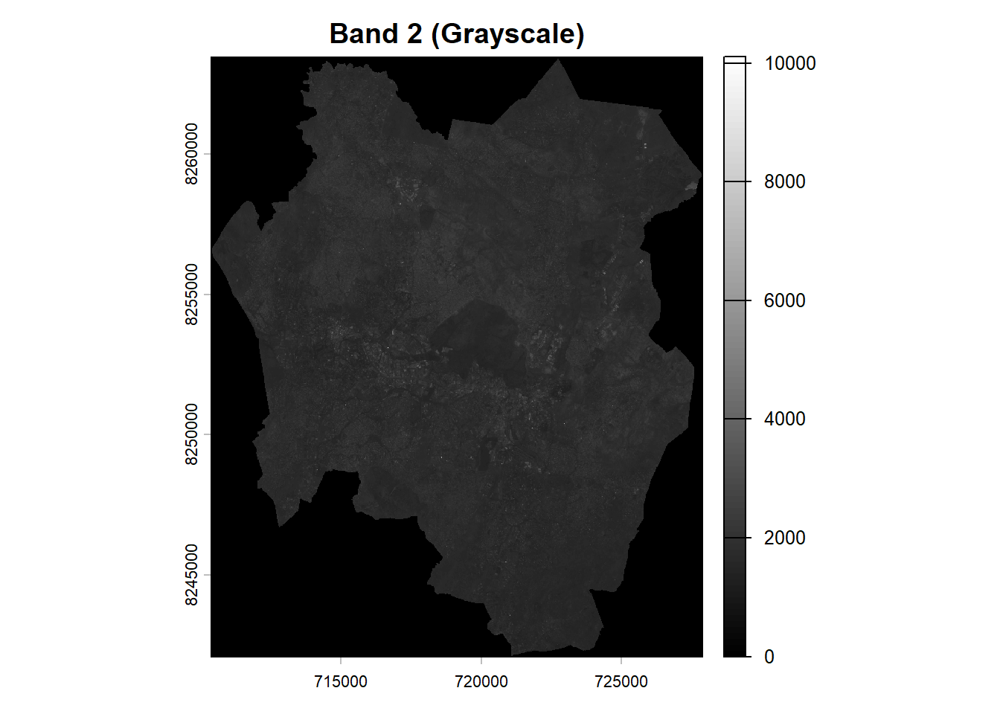
plot(b3, col = gray(0:100/100), main = "Band 3 (Grayscale)")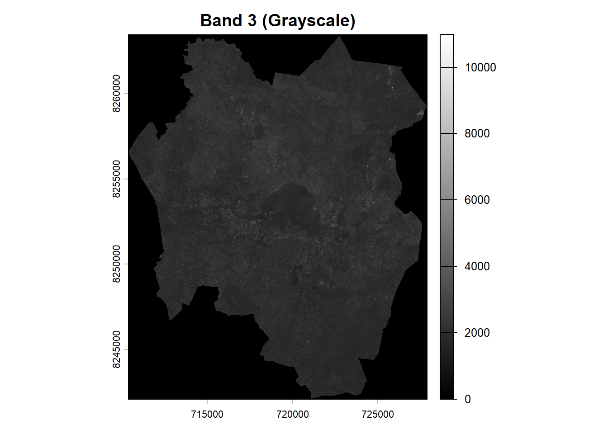
plot(b4, col = gray(0:100/100), main = "Band 4 (Grayscale)")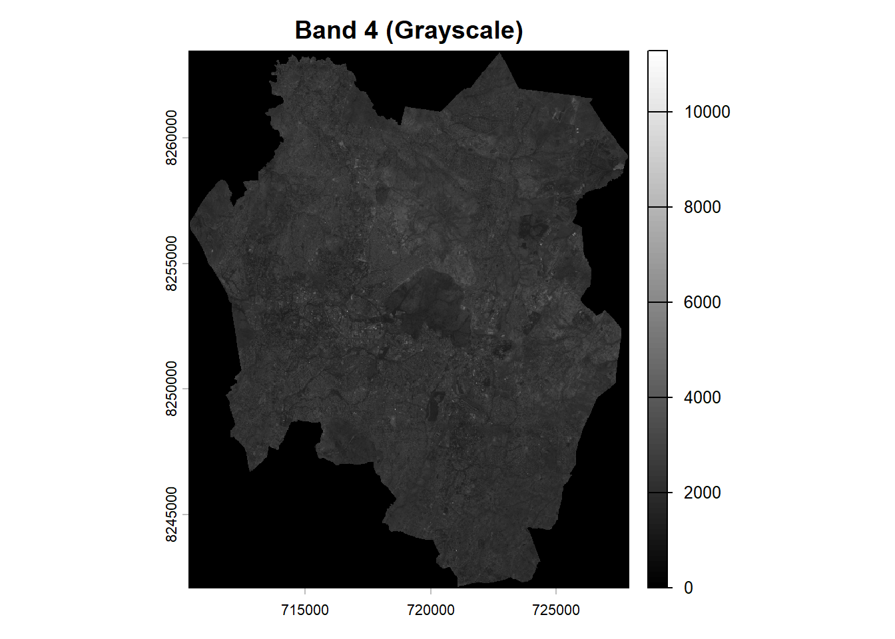
Plot the bands side by side for comparison.
par(mfrow = c(2,2))
plot(b2, main = "Blue", col = gray(0:100/100))
plot(b3, main = "Green", col = gray(0:100/100))
plot(b4, main = "Red", col = gray(0:100/100))
plot(b8, main = "NIR", col = gray(0:100/100))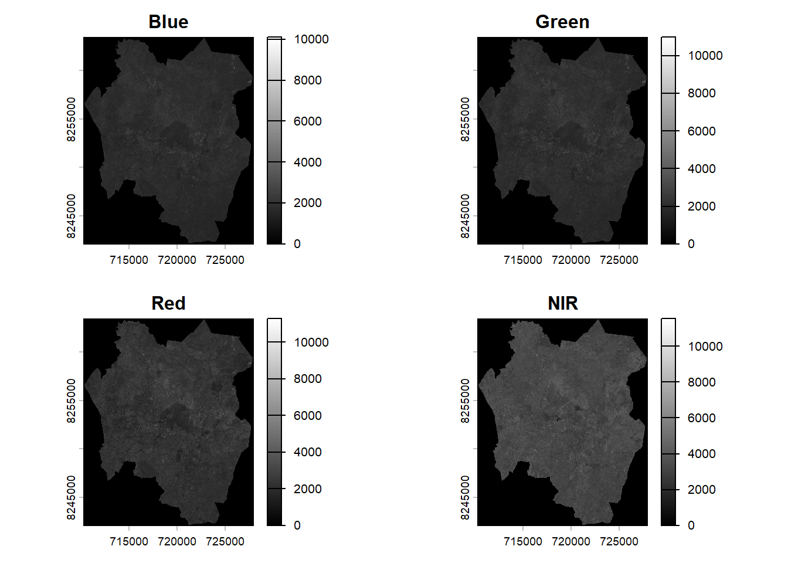
Color Composites
True Colour
The true colour composite displays a natural-looking image by assigning Sentinel-2 bands B04(red), B03(green), and B02(blue) to the red, green, and blue channels of the image, respectively.
s2_rgb <- c(b4, b3, b2) #create an object to store RGB bands
plotRGB(s2_rgb, stretch="lin") 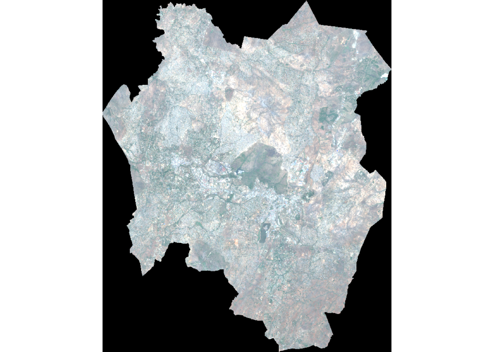
plotRGB() function makes a Red-Green-Blue plot based on three layers/bands in a SpatRaster(spatial raster).
stretch provides an option to stretch the values to increase contrast: “lin” (linear) or “hist” (histogram).
False Colour: RGB(8,4,3)
False colour images are created by combining the near-infrared, red, and green bands. This type of composite is often used to evaluate vegetation density and health, with areas covered by plants showing up as deep red. Regions with denser vegetation appear darker red, while urban areas and bare soil appear gray or tan, and water bodies are shown in shades of blue or black.
s2_fcc <- c(b8, b4, b3)
plotRGB(s2_fcc, stretch="hist") # applied histogram stretch.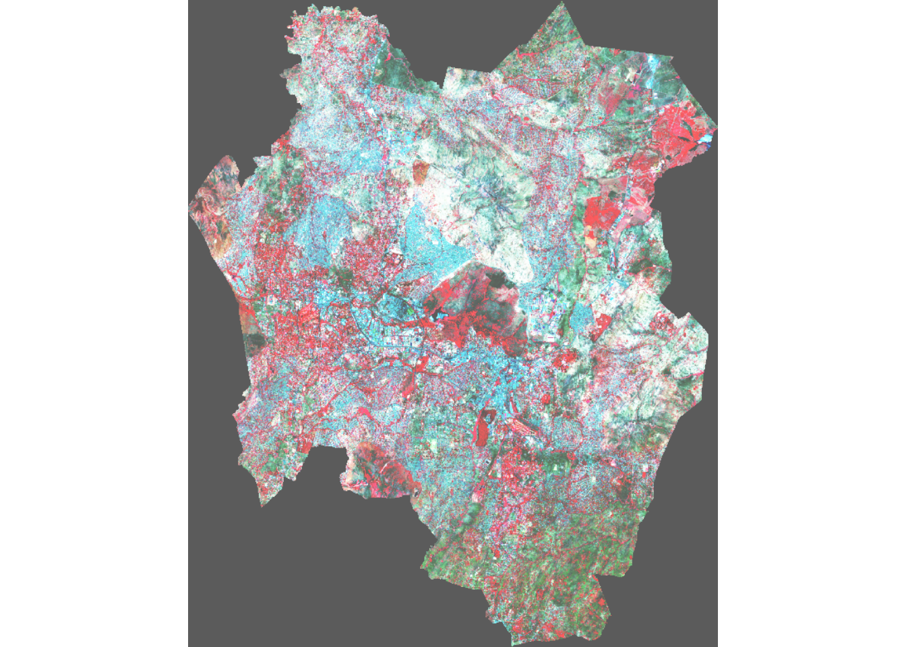
SWIR: RGB(12,8,4)
This false-color composite uses SWIR (B12) for red, vegetation (B8A) for green, and red (B4) for blue. It highlights water content, burned areas, and vegetation health, while bare soil and urban areas appear bluish, and dense vegetation appears green.
Resample band 4 (10m spatial resolution) to 20m resolution of bands 12 and 8A before stacking
b4_20m <- resample(b4, b12, method="bilinear") # match b12 resolutionStack the bands
s2_swir <- c(b12, b8a, b4_20m)
plotRGB(s2_swir, stretch="hist")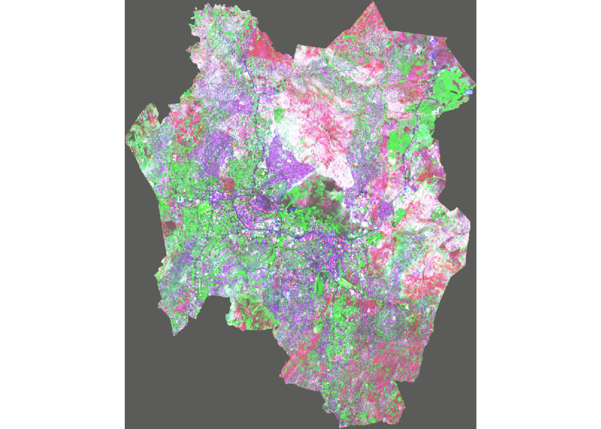
Agriculture: RGB(11,8,2)
Known as the Agriculture RGB composite, this image combines SWIR-1 (B11), near-infrared (B8), and blue (B2) bands. It is primarily used to assess crop health, as the SWIR and NIR bands effectively highlight dense vegetation, which appears dark green.
Since bands 2 and 8 have a 10m spatial resolution, different from that of band 11 (20m), you will resample b2 and b8 to 20m before creating a stack.
b2_20m <- resample(b2, b11, method="bilinear")
b8_20m <- resample(b8, b11, method="bilinear")Create a layer stack and the colour composite:
s2_agriculture <- c(b11, b8_20m, b2_20m)
plotRGB(s2_agriculture, stretch = "hist", smooth = TRUE, axes=TRUE)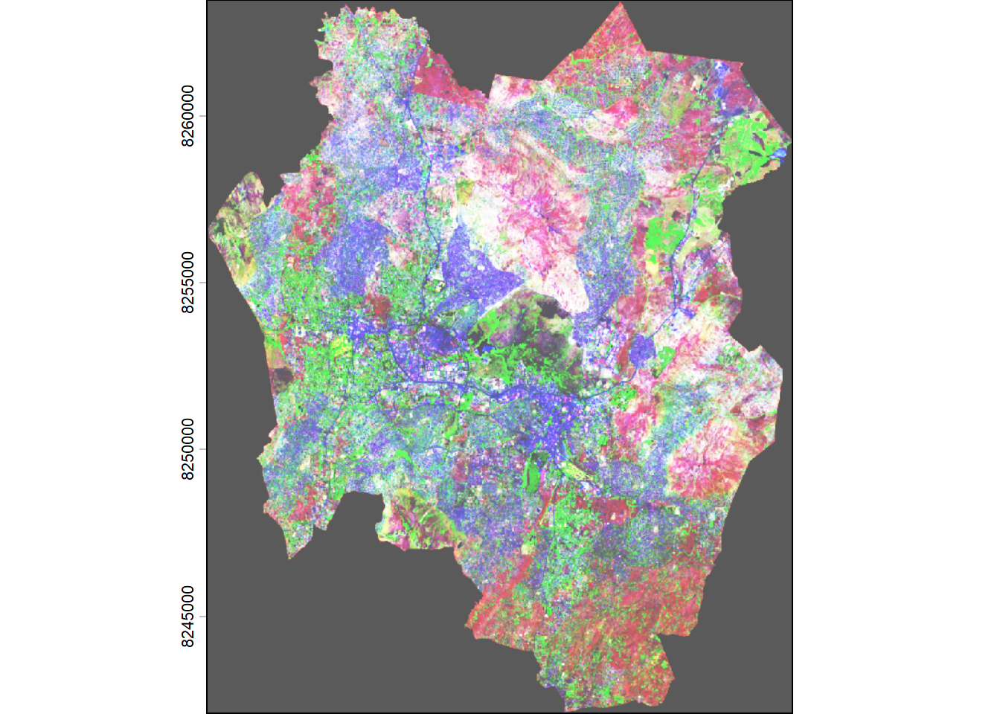
Create a Multiband image (stack bands)
A multiband image contains multiple spectral bands stored together in a single dataset. We have already created this before when we were looking at color composites. We created images with three bands.
You will create a SpatRaster with multiple layers
Remember that the twelve bands come at different spatial resolution. It is important to resample to a common resolution before stacking them together. Since the goal is to visualise the images, we will resample everything to 10m resolution. However, you cannot create a new spatial detail by upscalling 20m or 60m bands to 10m.
# Use one 10 m band as reference
ref <- b4
b1 <- resample(b1, ref, method="bilinear")
b5 <- resample(b5, ref, method="bilinear")
b6 <- resample(b6, ref, method="bilinear")
b7 <- resample(b7, ref, method="bilinear")
b8a <- resample(b8a, ref, method="bilinear")
b9 <- resample(b9, ref, method="bilinear")
b11 <- resample(b11, ref, method="bilinear")
b12 <- resample(b12, ref, method="bilinear")Proceed to create a multiband image.
s2 <- c(b1, b2, b3, b4, b5, b6, b7, b8, b8a, b9, b11, b12)
names(s2) <- c('b1', 'b2', 'b3', 'b4', 'b5', 'b6', 'b7', 'b8', 'b8a', 'b9', 'b11', 'b12')The code above stacks individual Sentinel-2 spectral bands into a single multiband raster and assigns meaningful names to each band.
Plot RGB composite from the multiband image:
plotRGB(s2, r='b4', g='b3', b='b2', stretch="hist", axes=TRUE)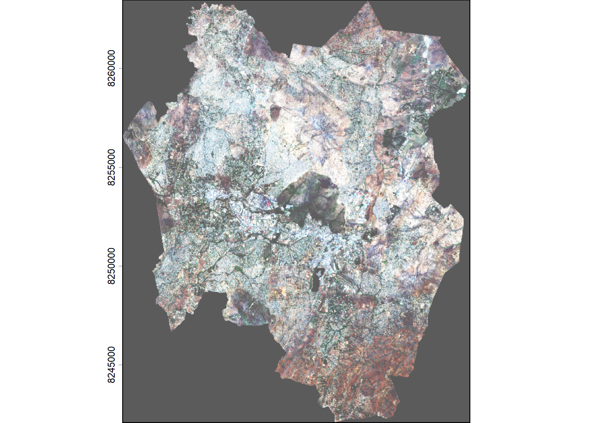
Making plots using tmap package
You can also use the tmap package to plot the images.
True colour with tmap
tm_shape(s2) +
tm_rgb(col = tm_vars(c("b4", "b3", "b2"), multivariate = TRUE))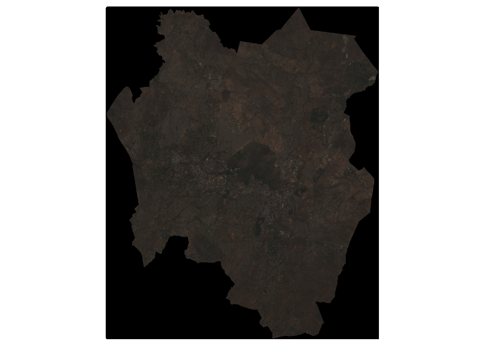
You should have noticed that the images plot with a black rectangle around the study area. You will now remove this unwanted region from the plots.
You will use the SpatVector (shapefile) for the study area (Blantyre city) to crop the image to city boundary so as not to plot no data values(black portions)
First make sure that the coordinate reference system for Blantyre city is similar to that of the image bands.
st_crs(b1)Coordinate Reference System:
User input: WGS 84 / UTM zone 36S
wkt:
PROJCRS["WGS 84 / UTM zone 36S",
BASEGEOGCRS["WGS 84",
DATUM["World Geodetic System 1984",
ELLIPSOID["WGS 84",6378137,298.257223563,
LENGTHUNIT["metre",1]]],
PRIMEM["Greenwich",0,
ANGLEUNIT["degree",0.0174532925199433]],
ID["EPSG",4326]],
CONVERSION["UTM zone 36S",
METHOD["Transverse Mercator",
ID["EPSG",9807]],
PARAMETER["Latitude of natural origin",0,
ANGLEUNIT["degree",0.0174532925199433],
ID["EPSG",8801]],
PARAMETER["Longitude of natural origin",33,
ANGLEUNIT["degree",0.0174532925199433],
ID["EPSG",8802]],
PARAMETER["Scale factor at natural origin",0.9996,
SCALEUNIT["unity",1],
ID["EPSG",8805]],
PARAMETER["False easting",500000,
LENGTHUNIT["metre",1],
ID["EPSG",8806]],
PARAMETER["False northing",10000000,
LENGTHUNIT["metre",1],
ID["EPSG",8807]]],
CS[Cartesian,2],
AXIS["(E)",east,
ORDER[1],
LENGTHUNIT["metre",1]],
AXIS["(N)",north,
ORDER[2],
LENGTHUNIT["metre",1]],
USAGE[
SCOPE["Navigation and medium accuracy spatial referencing."],
AREA["Between 30°E and 36°E, southern hemisphere between 80°S and equator, onshore and offshore. Burundi. Eswatini (Swaziland). Kenya. Malawi. Mozambique. Rwanda. South Africa. Tanzania. Uganda. Zambia. Zimbabwe."],
BBOX[-80,30,0,36]],
ID["EPSG",32736]]st_crs(bt)Coordinate Reference System:
User input: WGS 84 / UTM zone 36S
wkt:
PROJCRS["WGS 84 / UTM zone 36S",
BASEGEOGCRS["WGS 84",
DATUM["World Geodetic System 1984",
ELLIPSOID["WGS 84",6378137,298.257223563,
LENGTHUNIT["metre",1]]],
PRIMEM["Greenwich",0,
ANGLEUNIT["degree",0.0174532925199433]],
ID["EPSG",4326]],
CONVERSION["UTM zone 36S",
METHOD["Transverse Mercator",
ID["EPSG",9807]],
PARAMETER["Latitude of natural origin",0,
ANGLEUNIT["Degree",0.0174532925199433],
ID["EPSG",8801]],
PARAMETER["Longitude of natural origin",33,
ANGLEUNIT["Degree",0.0174532925199433],
ID["EPSG",8802]],
PARAMETER["Scale factor at natural origin",0.9996,
SCALEUNIT["unity",1],
ID["EPSG",8805]],
PARAMETER["False easting",500000,
LENGTHUNIT["metre",1],
ID["EPSG",8806]],
PARAMETER["False northing",10000000,
LENGTHUNIT["metre",1],
ID["EPSG",8807]]],
CS[Cartesian,2],
AXIS["(E)",east,
ORDER[1],
LENGTHUNIT["metre",1]],
AXIS["(N)",north,
ORDER[2],
LENGTHUNIT["metre",1]],
ID["EPSG",32736]]If the shapefile had a different projection from that of the bands, you would run the following to transform its crs (remove the comment #):
# bt <st_transform(bt, st_crs(b1))Crop the multiband image to city boundary bounding box. This trims the raster size.
bt_s2 <- crop(s2, bt)Plot the cropped image:
plotRGB(bt_s2, r='b4', g='b3', b='b2', stretch="lin", axes=TRUE)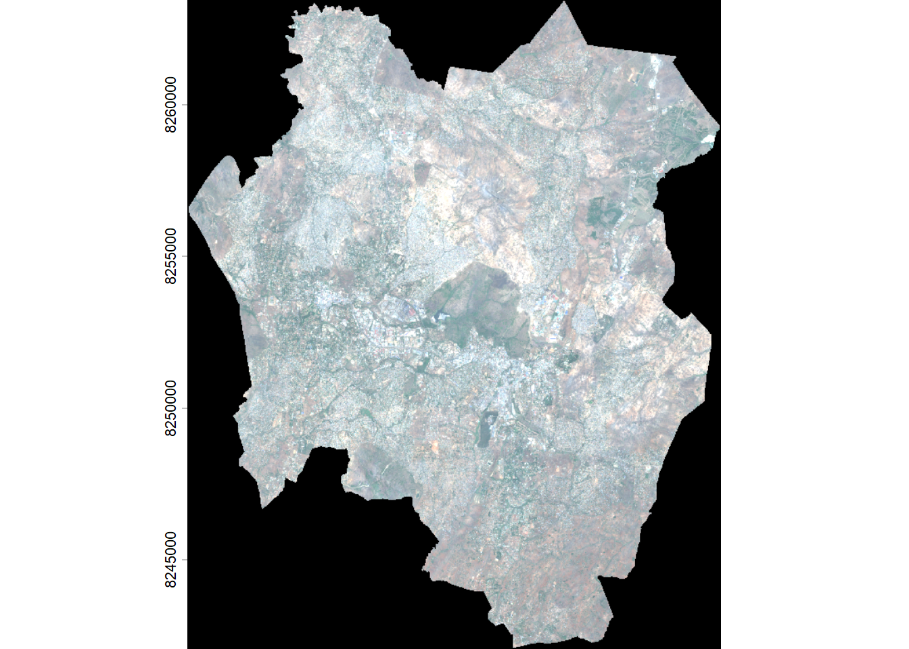
Next you will mask unwanted areas in the image using Blantyre city boundary so as not to plot no data values(black portions).
Plot True Colour
bt_s2_mask <- mask(bt_s2, bt)
plotRGB(bt_s2_mask, r='b4', g='b3', b='b2', stretch="hist")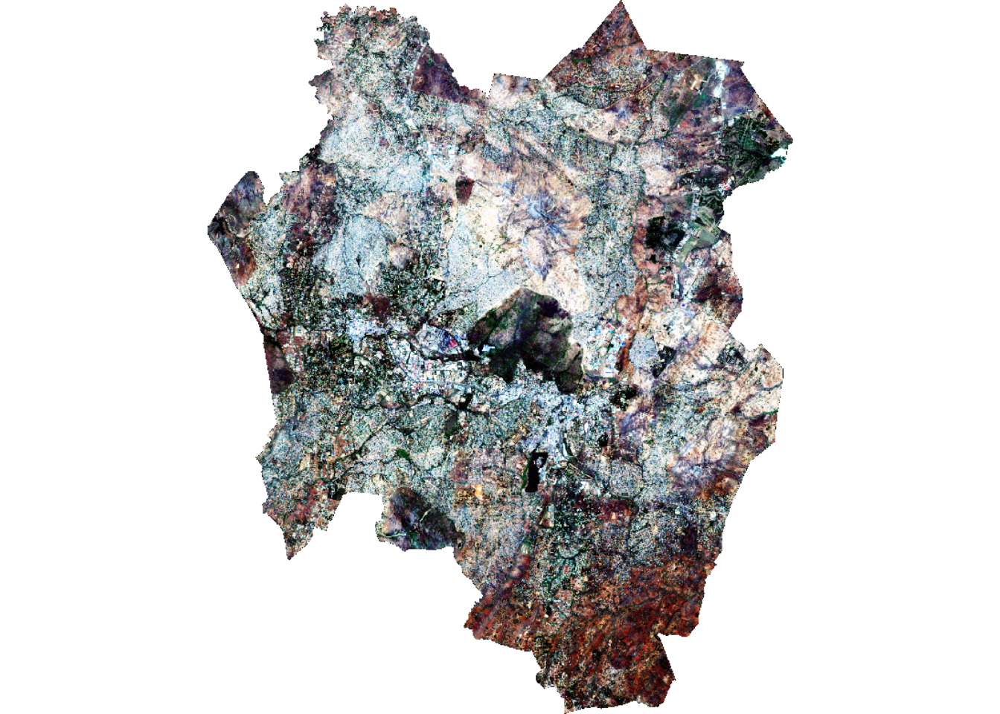
Plot False Colour:
bt_s2_mask <- mask(bt_s2, bt)
plotRGB(bt_s2_mask, r='b8', g='b4', b='b3', stretch="hist")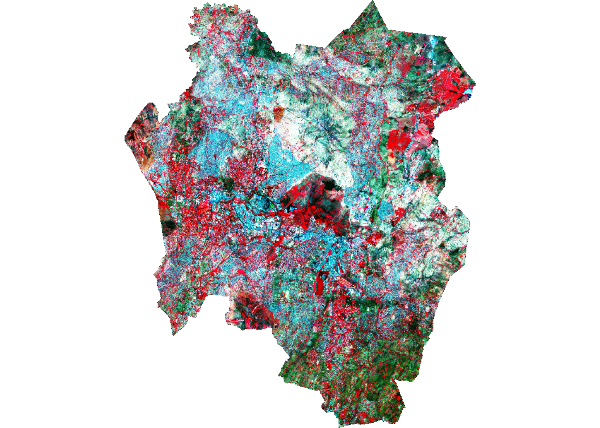
You can export the raster using the writeRaster() function.
# writeRaster(bt_s2_mask, "blantyreCityS2.TIF", overwrite=TRUE)More plots
It is possible to create a professional map using tmap which can go into a report, presentation or publication.
tm_shape(bt_s2_mask) +
tm_rgb(col = tm_vars(c("b4", "b3", "b2"), multivariate = TRUE)
)+
tm_title("Blantyre City Sentinel-2 RGB (24 October 2025)",
color = "black"
)+
tm_credits("Data Source: Copernicus Browser",
position = c("left", "bottom"),
size = 0.5
)+
tm_credits("Date: 05 February 2026",
position = c("left", "bottom"),
size = 0.5
) +
tm_credits("Author: Dickson Mbeya",
fontface = "italic",
position = c("left", "bottom"),
size = 0.5
) +
tm_grid(lines = FALSE
)+
tm_graticules(lines=FALSE,
col="grey",
labels.size = 0.7
)